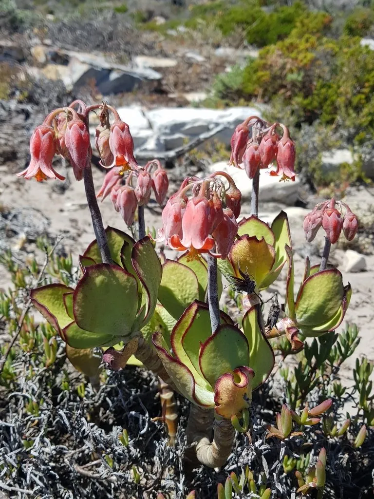

多肉植物 · 植物界
银波锦 Cotyledon undulata

景天科银波锦属多肉，叶片灰绿色、边缘呈波浪状，覆白粉，原产南非，是叶形奇特、姿态优雅的观赏多肉。
- 分类
- 门被子植物门纲木兰纲目虎耳草目科景天科属银波锦属
- 栖息环境
- 南非干旱地区的石质坡地与灌丛
- 地理分布
- 原产南非，世界各地盆栽观赏
- 保护级别
- 暂无评估
物种志
银波锦为景天科银波锦属的肉质灌木，株高 30–60 厘米，茎直立，叶片对生，倒卵形或扇形，长 5–8 厘米，叶面灰绿色，覆一层白色蜡粉，叶缘呈明显的波浪状，像起伏的裙边。花为聚伞花序，花橙红色、下垂，花期春季；果实为蓇葖果。
银波锦原产南非的干旱地区，喜阳光充足、温暖干燥和通风良好的环境，耐旱、怕积水和低温。它叶缘波浪起伏、叶面覆白粉，形似银色的波浪，因此得名，是银波锦属中最具代表性的种类。栽培用颗粒土，生长期干透浇透，避免冲掉叶面白粉，冬季保持 8℃ 以上；繁殖以枝插和叶插为主。
形态与习性
- 株高30–60 厘米
- 叶片倒卵形或扇形，叶缘波浪状
- 花期春季，花橙红色、下垂
- 光照喜充足光照
- 水分耐旱，干透浇透
- 土壤排水良好的颗粒土
- 繁殖枝插、叶插
- 特点叶面覆白粉，叶缘如波浪
趣味知识
- 银波锦的叶缘呈波浪状，覆白粉后像银色的波浪，因此得名。
- 它原产南非，喜干怕涝，浇水时不要冲掉叶面白粉。
- 花橙红色、下垂开放，与银灰色的叶片形成鲜明对比。